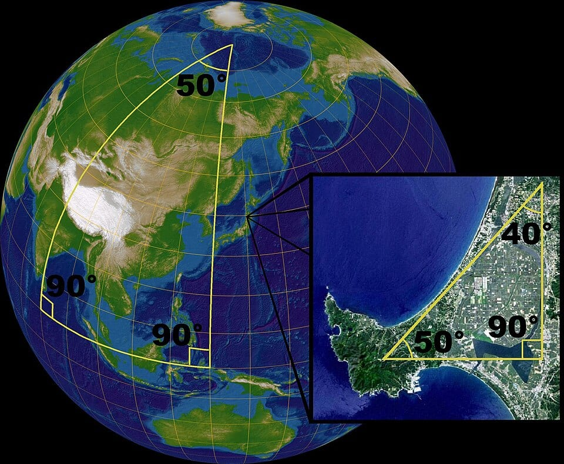
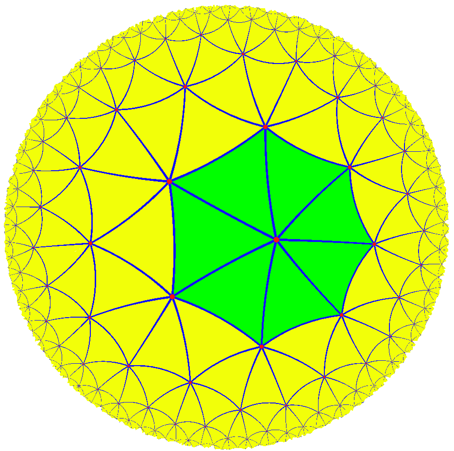

Flat triangle: 80° + 60° + 40° = 180°
Ball triangle: 90° + 90° + 90° = 270°
Saddle triangle: 70° + 50° + 40° = 160°
Those three lines are non-Euclidean geometry in action. The first is the golden rule you already know: on flat paper, every triangle's angles add to exactly 180 degrees. The second and third look like mistakes — 270°? 160°? — but they are not mistakes at all. They are triangles drawn on a BALL and on a SADDLE, where the rules of the game are different.
In this honors edition, you won't just believe those three lines — you'll COMPUTE with them. You'll learn a beautiful formula called Girard's theorem that turns a triangle's extra degrees into its exact AREA, and you'll prove it yourself, step by step. You'll measure the curvature of a world from a single triangle and even calculate the radius of a planet without ever leaving its surface. And you'll discover something truly shocking: on a ball, two triangles with the same three angles must have the same area — which means zooming in and out, the heart of similar triangles, simply does not exist there.
Why do people care? Because the world you live on IS a ball! Airplanes flying between continents, GPS satellites guiding your phone, and every world map ever drawn all run on ball geometry. And it gets wilder: about 100 years ago, Albert Einstein discovered that space itself can be curved — and ball-and-saddle geometry is the language his discovery speaks. For 2,000 years, everyone thought Euclid's rules were the only possible rules. Changing just ONE of them opened up whole new universes of math. Now you get to visit them — with a pencil, a protractor, and some real formulas.
In this lesson, you will:
- 1.Learn Euclid's five postulates — and five famous statements that stand or fall together like dominoes
- 2.Learn what "straight line" even means on a curved surface (geodesics)
- 3.Explore ball geometry: no parallel lines and fat triangles
- 4.Prove and use Girard's theorem: on a ball, area IS angle excess
- 5.Explore saddle geometry: crowds of parallels, skinny triangles, and a stunning area limit
- 6.Become a quantitative curvature detective: one triangle reveals the radius of the world
- 7.See why flat maps can't help but lie — and why airplanes fly "curved" routes
- 8.Compare the three worlds side by side
- 9.Learn the seven classic mistakes so you never make them
- 10.Practice with 100 problems — easy, intermediate, and challenge, then take the 🏆 Quiz
How to use this lesson: Read the sections in order. Each section starts with the key idea you'll learn in it. Every new idea is built from the one before it, and every worked example shows EVERY step with a reason — so keep a pencil and paper next to you and check each line yourself. Try every "Your Turn" box before reading its answer. If you have a ball or a globe at home, keep it nearby — this lesson is much more fun when you can touch the math! Ready? Let's go!
📸 Pictures

A giant triangle drawn on the Earth. Its angles are 90° + 90° + 50° = 230°, way more than 180°! But a small triangle on the ground is almost flat, so its angles add up to about 180°. See source ↓

A tiling of the hyperbolic plane. The tiles near the edge look tiny to us, but in their own curved world they're all exactly the same size! See source ↓
🗺️ Your lesson map
The Five Postulates — and the Troublemaker 🧩Lesson 2
What Is a Straight Line, Anyway? 🎯Lesson 3
Geometry on a Ball — Fat Triangles 🔍Lesson 4
Girard's Theorem — On a Ball, Area IS Excess ⚡Lesson 5
Geometry on a Saddle — Skinny Triangles 🌟Lesson 6
The Curvature Detective, Quantified 🛠️Lesson 7
Maps Lie — Geometry in the Real World 🎨Lesson 8
The Three Worlds, Side by Side ⚠️Lesson 9
Watch Out! Seven Common Mistakes 🧠Lesson 10
Review — The Big Picture 🏋️Practice Problems
100 problems to try 🏆Quiz
Test yourself: new questions every time!
📚 Picture Sources
- Picture 1 · Triangles (spherical geometry). By Lars H. Rohwedder, Sarregouset. CC BY-SA 3.0. From Wikimedia Commons: https://commons.wikimedia.org/wiki/File:Triangles_(spherical_geometry).jpg
- Picture 2 · Uniform tiling 73-t2 colored. By Jakob.scholbach. CC BY-SA 3.0. From Wikimedia Commons: https://commons.wikimedia.org/wiki/File:Uniform_tiling_73-t2_colored.png
.jpg){kind=link}